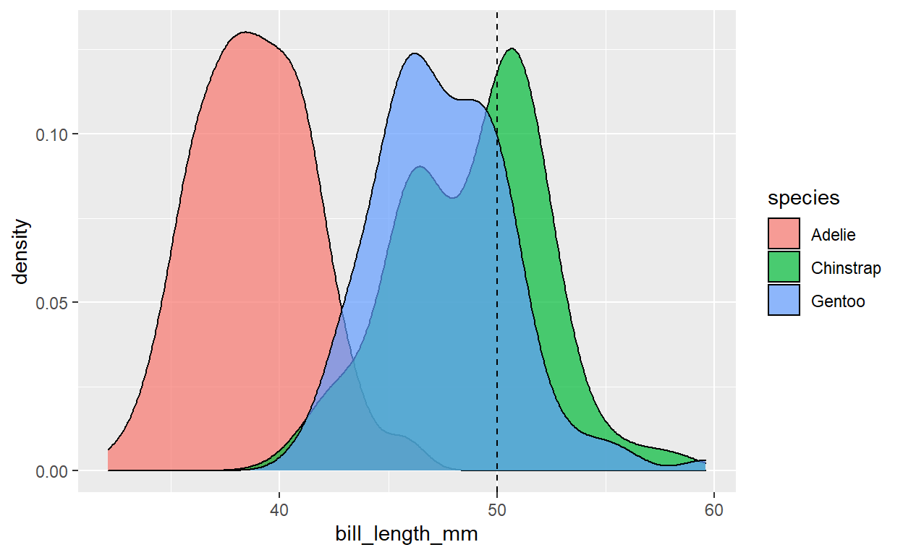
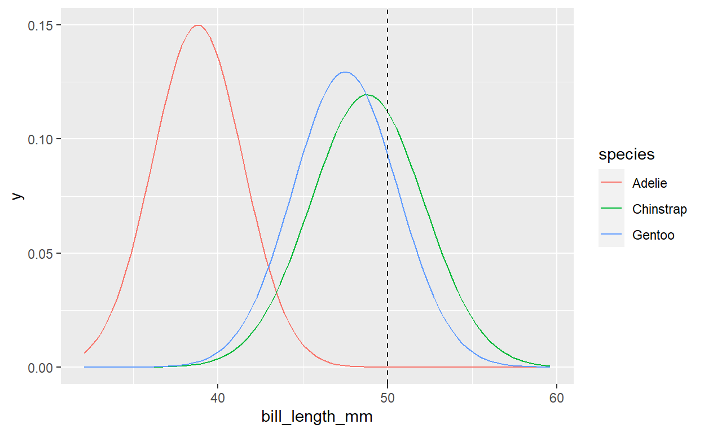
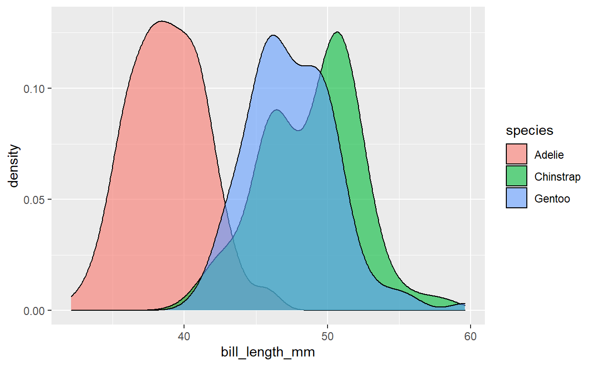
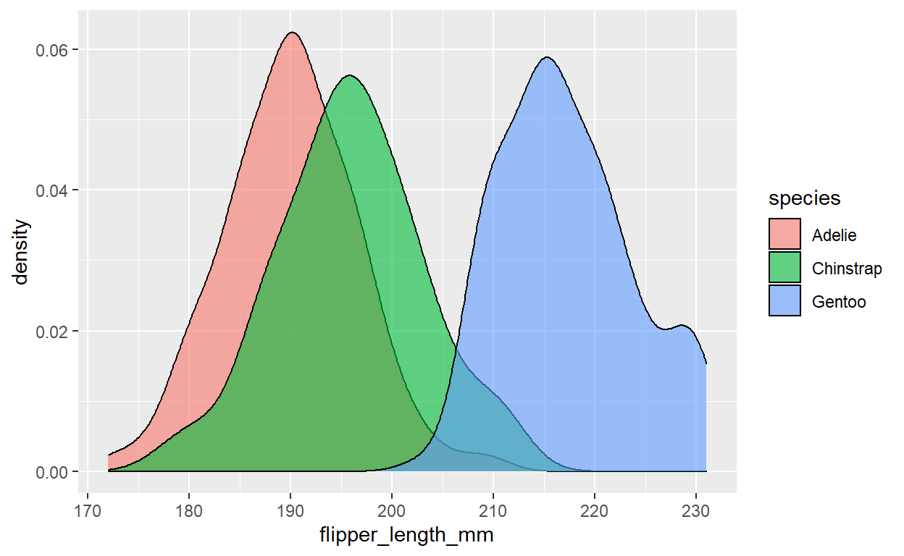
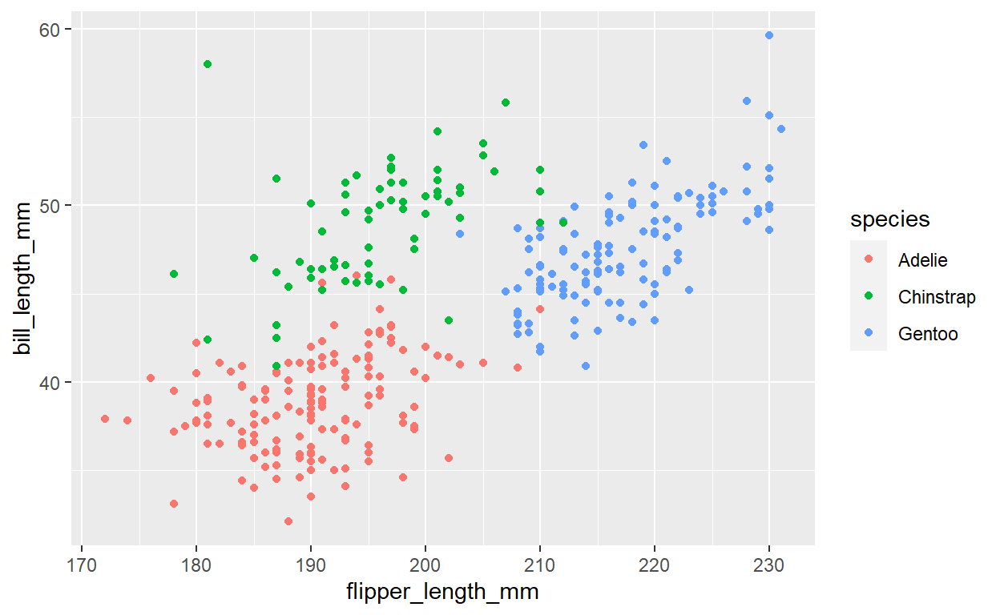

Inleiding
Onlangs verscheen een prachtig boek van Alicia A. Johnson, Miles Q. Ot en Mine Dogucu onder de titel Bayes Rules! An Introduction to Applied Bayesian Modeling en het verscheen bij CRC Press (2022). Eerdere versies stonden kon je al via bookdown bekijken (https://www.bayesrulesbook.com/) en vanaf de eerste keer dat ik het zag, was ik hier heel enthousiast over. Het boek heb ik direct besteld en vorige week kon ik het ophalen.
Het boek bestaat uit vier duidelijke delen. Het eerste deel gaat in op de fundamenten van het Bayesiaanse perspectief. Het leert je denken als een Bayesiaan en het gaat in op die belangrijke Bayesiaanse regel \(posterior=\frac{prior.likelihood}{normaliserende constante}\). Aan de hand van enkele voorbeelden gaan Johnson e.a. in op hoe het in de praktijk werkt. Daarna gaat het in op hoe kennis en data op elkaar inwerken en laat het enkele basisanalyses zien en hoe dat in deze vorm van statistiek werkt (normaal, binair en poisson). Het tweede deel is een meer technisch hoofdstuk en laat je ook onder de moterkap van deze techniek kijken. Het gaat ook in op de wetenschappelijke principes van de benadering, waar je hier op moet letten, hoe je hiermee hypothesen kunt testen (niet alleen tov van een nulhypothese, maar hoeveel beter de ene hypothese is ten opzichte van de andere hyposthese) en hoe je hiermee ook kunt voorspellen. De twee volgende delen (Deel drie en vier) zijn praktische delen. Deel drie gaat in op regressieanalyses voor continue variabelen en classificatieanalyses voor binaire variabelen. Het vierde deel ten slotte gaat in op geclusterde datasets en hoe je hierarchische Bayesiaanse regressie en classificatieanalyses uitvoert.
Natuurlijk, er zijn onderhand al verschillende interessante boeken te krijgen die je laten zien hoe Bayesiaanse denken in de praktijk kan werken. De boeken van Gelman, McElreath, Spiegelhalter en Kruschke verschenen de afgelopen tien/vijftien jaar en leren je dit. Maar Bayes Rules! vind ik op dit moment als introductieboek mogelijk wel het beste.
Nu het boek bij mij op het bureau ligt, kan ik er binnenkort een keer een korte recensie over schrijven. Voor nu heb ik uit elk deel een hoofdstuk genomen en het vertaald en bewerkt. Hieronder zie je een bewerking van het veertiende hoofdstuk van het derde deel (Naïve Bayes Classification).Hoofdstukken zo overzetten is voor mij niet alleen een goede manier om het mij eigen te maken, maar ook een manier om het boek anderen aan te raden. Dus lezen en gebruiken deze Bayes Rules! An Introduction to Applied Bayesian Modeling
Naïeve Bayesiaanse classificatie
Op Antartica zijn er verschillende penguinsoorten te vinden waaronder de *Adelie**, Chinstrap en Gentoo-soorten.
\[\ Y = \begin{cases} A=Adelie \\ C=Chinstrap \\ G=Gentoo\\ \end{cases} \]\]
We zullen deze drie soorten classificeren op basis van het gewicht
\[\ X_1 = \begin{cases} 1=bovenhetgemiddeldegewicht \\ 0=onderhetgemiddeldegewicht\\ \end{cases} \]\]
(\(x_1=1\) als het boven het gemiddelde gewicht van 4200 g ligt en een \(X_1=0\) als dat gemiddelde lager is dan 4300 gram).
Verder is er \[x_2=snavellengte (in mm)\]
\[x_3=flipperlengte\]
De penguins_bayes data, oorspronkelijk ter beschikking gesteld door Gorman, Williams, en Fraser (2014) en vervolgens verspreid door Horst, Hill, en Gorman (2020), bevat de bovenstaande soort- en kenmerkinformatie voor een steekproef van 344 Antarctische pinguïns:
Onder deze 344 pinguïns zijn er 152 Adelies, 68 Chinstrap/Kinband pinguïns, en 124 Gentoos. We gaan er steeds van uit dat de proportionele verdeling van deze soorten in onze dataset de verdeling van de soorten in het wild weerspiegelt. Dat wil zeggen dat we bij elke nieuwe pinguïn aannemen dat het hoogst waarschijnlijk een Adélie is (44,2%) en het minst waarschijnlijk een Chinstrap(19,8%). Zo ziet de geschatte verdeling er dan uit:
species n percent
Adelie 152 0.4418605
Chinstrap 68 0.1976744
Gentoo 124 0.3604651Er zijn drie mogelijkheden of categorieën voor de \(Y\). Gelukkig zijn er allerlei hulpmiddel om te schatten over welke soort we het hebben. Logistische regressie werkt hier niet zo goed voor, naïeve Bayes classificatie wel. Ten opzichte van Bayesiaanse logistische regressie heeft naïeve Bayes classificatie een paar voordelen:
- het kan categorische respons variabelen classificeren, dus Y met twee of meer categorieën;
- er is niet veel theorie nodig buiten de regel van Bayes;
- en zij is rekenkundig efficiënt, d.w.z. dat er geen MCMC-simulatie voor nodig is.
Classificeren van één pinquin
Laten we met het Bayesiaans classificeren van één penguin beginnen. Stel dat we een penguin vinden die minder dan 4200 gram weegt, die een snavel heeft van 50 mm en een flipper van 195mm. We willen iets ontwikkelen dat ons helpt om vast te stellen met welk soort we hier te maken hebben.Laten we de drie soorten en hun gewicht eens afbeelden.
Figure 1: Fig 1. Proporties van elk soort met bovengemiddeld gewicht
Chinstraps is relatief het lichtste soort. Maar we moeten tegelijkertijd in ons achterhoofd houden dat dit de minst voorkomende soort is. Dat wil zeggen dat we moeten denken als Bayesianen door de informatie uit onze gegevens over het te combineren met onze informatie vooraf (prior) over de proportionele verdeling van het soort om een posterior model te construeren voor de soort van onze pinguïn. De naïeve Bayes classificatie benadering van deze taak is niets meer dan een direct beroep op de beproefde Bayes’ Regel. In het algemeen, om de posterior waarschijnlijkheid te berekenen dat onze pinguïn van de soort
\[f(y|x_1) = \frac{\text{prior}\cdot\text{likelihood}}{\text{normaliserende constante}}=\frac{f(y)L(y|X_1)}{f(x_1)}\] waarvoor geldt de wet van de totale waarschijnlijkheid
\[f(x_1)=\sum_{ally^'}\]
Een tabel waarin de bovengemiddelde gewichtsstatus per soort (above_average_weight) wordt uitgesplitst, verschaft de nodige informatie om deze Bayesiaanse berekening te voltooien:
species 0 1 Total
Adelie 126 25 151
Chinstrap 61 7 68
Gentoo 6 117 123
Total 193 149 342In feite kunnen we het posterior model van de soort van onze pinguïn rechtstreeks uit deze tabel berekenen. Bijvoorbeeld, merk op dat van de 193 pinguïns die onder het gemiddelde gewicht zitten, 126 Adelies zijn. Er is dus ongeveer 65% posterior kans dat deze pinguïn een Adelie is:
\[f(y=A|x_1=0)=\frac{126}{93}\approx{0.6528}\] Laten we dit resultaat bevestigen door de informatie uit onze tabel hierboven in de regel van Bayes in te voeren. Deze vervelende stap is niet om te ergeren, maar om te oefenen voor generalisaties die we zullen moeten maken in meer ingewikkelde omgevingen. Ten eerste, onze informatie over het soort geeft aan dat Adelies het meest voorkomen en Chinstraps het minst:
\[f(y=A)=\frac{151}{342}, f(y=C)=\frac{68}{342}, f(y=G)=\frac{123}{342}\]
Verder tonen de waarschijnlijkheden aan dat een lager dan gemiddeld gewicht het meest voorkomt bij Chinstrapspinguïns. Bijvoorbeeld, 89.71% van de Chinstrapspinguïns maar slechts 4.88% van de Gentoos hebben een lager dan gemiddeld gewicht:
\[L=(y=A|x_1=0)=\frac{126}{151}\approx{0.8344} \\ L=(y=A|x_1=0)=\frac{61}{68}\approx{0.8971} \\ L=(y=A|x_1=0)=\frac{6}{123}\approx{0.0488}\]
Door deze priors en waarschijnlijkheden te gebruiken, wordt de totale waarschijnlijkheid van een pinguïn met een lager dan gemiddeld gewicht voor alle soorten
\[f(x_1=0)=\frac{151}{342}\times\frac{126}{151}+\frac{68}{342}\times\frac{61}{68}+\frac{123}{342}\times\frac{6}{123}=\frac{193}{342}\] Tenslotte, door de regel van Bayes kunnen we bevestigen dat er een 65% posterior kans is dat deze pinguïn een Adelie is:
\[f(y=A|x_1=0)=\frac{f(y=A)L(y=A|x_1=0)}{f(x_1=0)} \\ =\frac{151/342.(126/151)}{193/342}\approx{0.6528}\]
Tegelijk zien we dat
\[f(y=C|x_1=0)\approx{0.3161}\] en \[f(y=G|x_1=0)\approx{0.0311}\] Alles bij elkaar is de posterior waarschijnlijkheid dat deze pinguïn een Adelie is meer dan dubbel zo groot als die van de andere twee soorten. Dus, onze naïeve Bayes classificatie, gebaseerd op onze voorinformatie en het onder-gemiddelde gewicht van de pinguïn alleen, is dat deze pinguïn een Adelie is. Hoewel een lager dan gemiddeld gewicht relatief minder voorkomt bij Adélie’s dan bij Kinbandpinguïns, werd de uiteindelijke classificatie over de rand geduwd door het feit dat Adélie’s veel algemener zijn.
Één kwantitatieve voorspeller
Laten we het gewicht van de pinguïn even buiten beschouwing en het soort indelen aan de hand van het feit dat hij een snavel van 50 mm heeft.

# A tibble: 3 x 3
species mean sd
<fct> <dbl> <dbl>
1 Adelie 38.8 2.66
2 Chinstrap 48.8 3.34
3 Gentoo 47.5 3.08Het uitzetten van de afgestemde normale modellen voor elke soort bevestigt dat deze naïeve Bayes-aanname niet perfect is - het is iets idealistischer dan de dichtheidsplots van de ruwe gegevens van het figuur hierboven. Maar het is goed genoeg om verder te gaan.

Herinner u dat deze Normaliteitsveronderstelling het mechanisme verschaft dat we nodig hebben om de waarschijnlijkheid van het waarnemen van een 50 mm lange snavel bij elk van de drie soorten te evalueren, \(L(y|x_2=50)\) Terugkomend op figuur 14.3, komen deze waarschijnlijkheden overeen met de hoogte van de normale densiteitskromme bij een snavellengte van 50 mm. Dus, een 50 mm lange bek is iets waarschijnlijker bij Kinband- dan bij Gentoo pinguïns, en hoogst onwaarschijnlijk bij Adelie pinguïns. Meer specifiek kunnen we de waarschijnlijkheden berekenen met dnorm()
[1] 2.119955e-05[1] 0.1119782[1] 0.09317395Twee voorspellers
We hebben nu twee naïeve Bayes classificaties gemaakt van de soort van onze pinguïn: de ene enkel gebaseerd op het feit dat onze pinguïn onder het gemiddelde gewicht zit en de andere enkel gebaseerd op zijn 50mm lange snavel (naast onze eerdere informatie). En deze classificaties zijn niet identiek: wij classificeerden de pinguïn als Adelie in de eerste analyse en Gentoo in de tweede. Deze discrepantie toont aan dat er ruimte is voor verbetering in onze naïeve Bayes classificatie methode. In het bijzonder, in plaats van enkel te vertrouwen op één enkele voorspeller, kunnen we meerdere voorspellers in ons classificatieproces opnemen.
Beschouw de informatie dat onze pinguïn een snavellengte heeft van
\(X_2=50mm\) en een flipperlengte van \(X_3=195mm\). Elk van deze metingen alleen kan leiden tot een verkeerde classificatie. Net zoals het moeilijk is om een onderscheid te maken tussen de Chinstrap- en de Gentoopinguïn op basis van hun snavellengte, is het moeilijk om een onderscheid te maken tussen de Chinstrap en de Adéliepinguïn op basis van hun flipperlengte alleen (zie hieronder).

MAAR de soorten zijn redelijk te onderscheiden wanneer we de informatie over snavel- en vleugellengte combineren. Onze pinguïn met een 50 mm lange bek en 195 mm lange vleugels, voorgesteld op het snijpunt van de stippellijnen in de figuur hieronder, ligt nu precies tussen de Chinstrap waarnemingen:

Laten we naïeve Bayes classificatie gebruiken om deze gegevens in evenwicht te brengen met onze voorafgaande informatie over het soort lidmaatschap. Om de posterior waarschijnlijkheid te berekenen dat de pinguïn van de soort \(Y=y\) kunnen we de Bayes aanpassen aan onze twee voorspellers, \(X_2=x_2\) en \(X_3=x_3\).
Dit geeft weer een nieuwe wending: Hoe kunnen we de likelihood functie berekenen die twee variabelen omvat,\(L(y|x_2, x_3)\)? Dit is waar weer een andere “naïeve” veronderstelling binnensluipt. Naïeve Bayes classificatie gaat ervan uit dat voorspellers voorwaardelijk onafhankelijk zijn, dus \[L(y|x_2, x_3)=f(x_2, x_3|y)=f(x_2|y)f(x_3|y)\] Met andere woorden, binnen elke soort nemen we aan dat de lengte van de snavel van een pinguïn geen verband houdt met de lengte van zijn flipper. Wiskundig en computationeel gezien, maakt deze veronderstelling het naïeve Bayes algoritme efficiënt en beheersbaar. Maar het kan het ook verkeerd maken. Kijk nog eens naar de figuur hiervoven. Binnen elke soort lijken de vleugellengte en de snavellengte positief gecorreleerd te zijn, niet onafhankelijk. Toch gaan we naïef om met de veronderstelling van onvolmaakte onafhankelijkheid, en dus met de mogelijkheid dat onze classificatienauwkeurigheid zou kunnen worden afgezwakt.
Gecombineerd gaat het multivariabele naïeve Bayes-model ervan uit dat onze twee voorspellers Normaal en voorwaardelijk onafhankelijk zijn. We hebben dit normale model al afgestemd op de snalvellengte \(x_2\). Op dezelfde manier kunnen we de soortspecifieke normale modellen voor de lengte van de vleugels afstemmen op de overeenkomstige steekproefgemiddelden en standaardafwijkingen:
# A tibble: 3 x 3
species mean sd
<fct> <dbl> <dbl>
1 Adelie 190. 6.54
2 Chinstrap 196. 7.13
3 Gentoo 217. 6.48Zo kunnen wij voor elk van de drie soorten nagaan hoe groot de kans is dat een vleugelengte van 195 mm wordt waargenomen, \(L(y|x_3=195)=f(x_3=195|y)\)
[1] 0.04554175[1] 0.05540502[1] 0.0001933746Voor elke soort hebben we nu de waarschijnlijkheid dat we een snavellengte waarnemen van \(x_2=50mm\), de waarschijnlijkheid van het waarnemen van een vleugellengte van \(x_3=195\) en de voorafgaande waarschijnlijkheid (prior). Gecombineerd is de kans op het waarnemen van een 50 mm lange snavel en een 195 mm lange vleugel voor elk soort \(Y=y\), gewogen met de prior van elk van de soorten als volgt:
\[f(y^{'}=A)L(y^{'}=A|x_2=50, x3=195)=\frac{151}{342}\times0.0000212\times0.04554 \\ f(y^{'}=C)L(y^{'}=C|x_2=50, x3=195)=\frac{68}{342}\times0.0112\times0.05541 \\ f(y^{'}=G)L(y^{'}=G|x_2=50, x3=195)=\frac{123}{342}\times0.09317\times0.0001934 \] met een som van \[\sum_{all y^{'}}f(y^{'})L(y^{'}|x_2=50, x_3=195)\approx0.001241\]
Als we dat in de Bayes’regel stoppen dan wordt de waarschijnlijkheid dat de penguin een Adeliesoort is:
\[f(y=A|x_2=50,x_3=195)=\frac{\frac{151}{342}\times0.0000212\times0.04555}{0.001241}\approx0.0003\] Zo kunnen we de kans op de andere twee soorten ook berekeken: \[f(y=C|x_2=50,x_3=195)\approx0.9944 \\ f(y=G|x_2=50,x_3=195)\approx0.0052\] Conclusie, onze penguin is vrijwel zeker een Chinstrap. Hoewel we niet tot deze conclusie zijn gekomen op basis van een fysiek kenmerk alleen, schetsen deze twee samen een vrij duidelijk beeld.
Implementeren en evalueren van naive Bayesisaanse classificatie
Dat was aardig, maar we hoeven niet al dit werk met de hand te doen. Om naïeve Bayes classificatie in R te implementeren, gebruiken we de naïeveBayes() functie in het e1071 pakket (Meyer et al. 2021). Net zoals bij stan_glm(), voeden we naiveBayes() met de data en een formule die aangeeft welke variabelen in de analyse moeten worden gebruikt. Maar aangezien naive Bayes de prioriteitswaarschijnlijkheden rechtstreeks uit de gegevens berekent en de implementatie geen MCMC-simulatie vereist, hoeven we ons geen zorgen te maken over het verstrekken van informatie m.b.t. de priormodellen of Markovketens. Hieronder bouwen we twee naïeve Bayes classificatie-algoritmen, een die alleen bill_length_mm gebruikt en een die ook flipper_length_mm bevat:
Laten we deze beide toepassen om onze_penguin te classificeren die we de hele tijd hebben bestudeerd:
We beginnen met naive_model_1. De predict() functie geeft de posterior waarschijnlijkheden van elke soort terug, samen met een uiteindelijke classificatie. Deze classificatie volgt een eenvoudige regel: classificeer de pinguïn als de soort met de hoogste posterior waarschijnlijkheid. De resultaten van dit proces zijn gelijkaardig aan deze die we hierboven “met de hand” verkregen met een kleine afwijking door een afrondingsfout. In feite, gebaseerd op de snavellengte alleen, is onze beste gok dat deze pinguïn een Gentoo is:
Adelie Chinstrap Gentoo
[1,] 0.0001690279 0.3978306 0.6020004[1] Gentoo
Levels: Adelie Chinstrap Gentoo Adelie Chinstrap Gentoo
[1,] 0.0003445688 0.9948681 0.004787365En net zoals we hierboven concludeerden, als we rekening houden met zowel de snavellengte als de lengte van de vleugels, is onze beste gok dat deze pinguïn een Chinstrap is.
We kunnen op dezelfde manier onze naïeve Bayes modellen toepassen om een willekeurig aantal pinguïns te classificeren. Zoals met logistische regressie, zullen we twee gebruikelijke benaderingen volgen om de nauwkeurigheid van deze classificaties te evalueren:
- confusion matrixen construeren die de waargenomen soorten van onze steekproef pinguïns vergelijken met hun naïeve Bayes soortclassificaties;
- om een beter idee te krijgen van hoe goed onze naïeve Bayes modellen nieuwe pinguïns classificeren, berekenen we kruisgevalideerde schattingen van de nauwkeurigheid van de classificatie.
Om met de eerste benadering te beginnen, classificeren we elk van de pinguïns met zowel naive_model_1 als naive_model_2 en slaan deze op in penguins als class_1 en class_2:
De classificatieresultaten worden hieronder getoond voor vier willekeurig gekozen pinguïns, afgezet tegen de werkelijke species van deze pinguïns. Voor de laatste twee pinguïns, geven de twee modellen dezelfde classificaties (Adelie) en deze classificaties zijn correct. Voor de eerste twee pinguïns, leiden de twee modellen tot verschillende classificaties. In beide gevallen is naive_model_2 correct.
# A tibble: 4 x 5
bill flipper species class_1 class_2
<dbl> <int> <fct> <fct> <fct>
1 47.5 199 Chinstrap Gentoo Chinstrap
2 40.9 214 Gentoo Adelie Gentoo
3 41.3 194 Adelie Adelie Adelie
4 38.5 190 Adelie Adelie Adelie Het valt natuurlijk nog te bezien of naive_model_2 beter presteert dan naive_model_1 in het algemeen. Daartoe geven de onderstaande confusion matrixen een overzicht van de classificatienauwkeurigheid van de modellen over alle pinguïns in onze steekproef
species Adelie Chinstrap Gentoo
Adelie 95.39% (145) 0.00% (0) 4.61% (7)
Chinstrap 5.88% (4) 8.82% (6) 85.29% (58)
Gentoo 6.45% (8) 4.84% (6) 88.71% (110) species Adelie Chinstrap Gentoo
Adelie 96.05% (146) 2.63% (4) 1.32% (2)
Chinstrap 7.35% (5) 86.76% (59) 5.88% (4)
Gentoo 0.81% (1) 0.81% (1) 98.39% (122)Laten we, met deze aanwijzingen in gedachten, de twee confusion matrixen onderzoeken. Een snelle blik leert dat naive_model_2 het over de hele linie beter doet. Niet alleen zijn de classificatiepercentages voor elk van de Adelie, Chinstrap en Gentoo soorten hoger dan in naive_model_1, maar ook de totale nauwkeurigheid is hoger.
Het naive_model_2 classificeert 327 (146+59+122) van de 344 pinguïns correct (95%). Terwijl het naive_model_1 slechts 261 pinguïns correct classificeert (76%). Waar naive_model_2 de grootste verbetering vertoont t.o.v. naive_model_1 is in de classificatie van de Chinstrappinguïns. In naive_model_1 wordt slechts 9% van de Chinstrapspinguïns juist geklasseerd, met maar liefst 85% die verkeerd geklasseerd wordt als Gentoo. Met 87% is de classificatienauwkeurigheid voor Chinstraps veel hoger in naive_model_2.
Tenslotte kunnen we, voor de nodige zorgvuldigheid, 10-voudige kruisvalidatie gebruiken om te evalueren en te vergelijken hoe goed onze naïeve Bayes classificatiemodellen nieuwe pinguïns classificeren, niet enkel deze uit onze steekproef. We doen dit met behulp van de naive_classification_summary_cv() functie in het bayesrules pakket:
Het cv_model_2$folds object bevat de classificatienauwkeurigheid voor elk van de 10 vouwen (k=10) terwijl cv_model_2$cv het gemiddelde neemt van de resultaten over alle 10 vouwen:
species Adelie Chinstrap Gentoo
Adelie 96.05% (146) 2.63% (4) 1.32% (2)
Chinstrap 7.35% (5) 86.76% (59) 5.88% (4)
Gentoo 0.81% (1) 0.81% (1) 98.39% (122)De nauwkeurigheidspercentages in deze kruisgevalideerde confusion matrixen zijn vergelijkbaar met die in de niet-kruisgevalideerde verwarringsmatrix hierboven. Dit impliceert dat ons naïef Bayes model bijna even goed lijkt te presteren op nieuwe pinguïns als op het originele pinguïn monster dat we gebruikten om dit model te bouwen.
Naëve Bayes vs logistische regressie
Gezien de drie pinguïnsoorten, vereiste onze classificatie-analyse hierboven een naïeve Bayes classificatie - logistische regressie toepassen was zelfs geen optie. Echter, in scenario’s met een binaire categorische respons variabele \(Y\) zijn zowel logistische regressie als naïeve Bayes haalbare classificatiebenaderingen. Zowel naïeve Bayes als logistische regressie hebben hun voor- en nadelen. Hoewel naïeve Bayes zeker rekenkundig efficiënt is, maakt het ook een aantal zeer starre en vaak ongeschikte veronderstellingen over datastructuren. Je hebt misschien ook opgemerkt dat we wat nuance verliezen met naïeve Bayes. In tegenstelling tot het logistische regressiemodel met
\[log(\frac{\pi}{1-\pi})=\beta_0+\beta_1X_1+...\beta_kX_p,\] naïeve Bayes mist regressiecoëfficiënten \(\beta_1\). Dus, hoewel naïeve Bayes informatie over voorspellers \(X\) kan omzetten in classificaties van \(Y\) maar doet dit zonder veel opheldering over de relaties tussen deze variabelen.
Of naïeve Bayes of logistische regressie het juiste instrument is voor een binaire classificatie hangt af van de situatie. In het algemeen, als de starre naïeve Bayes-aannamen ongepast zijn of als u belang hecht aan de specifieke verbanden tussen \(Y\) en \(X\) (d.w.z. je wilt niet gewoon een reeks classificaties), dan moet je logistische regressie gebruiken. Anders is naïeve Bayes misschien precies wat je nodig hebt. Beter nog, kies niet! Probeer beide tools uit en leer ervan.
Samengevat
Naive Bayes classificatie is een handig hulpmiddel voor het classificeren van categorische responsvariabelen
\(Y\) met twee of meer categorieën. Stel (\(X_1, X_2, ...,X_p)\) zijn een set van \(p\) mogelijke voorspellers van \(Y\), naïef Bayes berekent de posterior waarschijnlijkheid van elke categorie via de Bayes regel:
\[f(y|x_1, x_2,...,x_p)=\frac{f(y)L(y|x_1, x_2, ...,x_p)}{\sum_{ally^{'}f(y^{'}L(y^{'}|x_1, x_2, ...,x_p)}}\]
Daarbij worden enkele zeer naïeve veronderstellingen gemaakt over het gegevensmodel op basis waarvan wij de waarschijnlijkheid \(L(y|x_1,x_2, ...,x_p\) bepalen. De voorspellers \(X_1\) zijn voorwaardelijk onafhankelijk en de waarden van de kwantitatieve voorspellers \(X_i\)X variëren normaal binnen elke categorie \(Y=y\). Deze vereenvoudigende veronderstellingen maken het naïeve Bayes-model rekenkundig efficiënt en eenvoudig toe te passen. Maar als deze vereenvoudigende veronderstellingen niet worden nageleefd (wat vaak voorkomt), kan het naïeve Bayes-model misleidende classificaties opleveren.
Literatuur
Gorman, Kristen B., Tony D. Williams, and William R. Fraser. 2014. “Ecological Sexual Dimorphism and Environmental Variability Within a Community of Antarctic Penguins (Genus Pygoscelis).” PLoS ONE 9(3) (e90081). hier.
Johnson, A.A., Ott, M.Q. & Dogucu, M. (2022). *Bayes Rules! An introduction to applied Bayesian Modeling. CRC Press. hier
Horst, Allison, Alison Hill, and Kristen Gorman. 2020. Palmerpenguins: Palmer Archipelago (Antarctica) Penguin Data. hier.